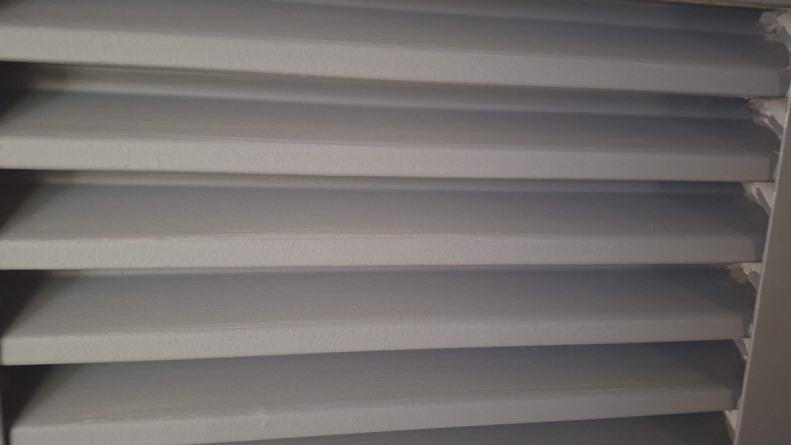

Investigación
Hechos del caso
El 5 de enero del 2026 el profesor Eduardo Otalora fue asesinado a arma blanca acordando a los testimonios de los estudiantes y personal que se encontraban en el lugar
Todas las pruebas y los testimonios concuerdan que su cuerpo se encuentran oculto dentro del edificio del Tx, aunque la investigaciones aun continuan ya se han llegado a diferentes conclusiones
Al presionar cada imagen exploraras una prueba diferente los hechos transcuridos ese dia


